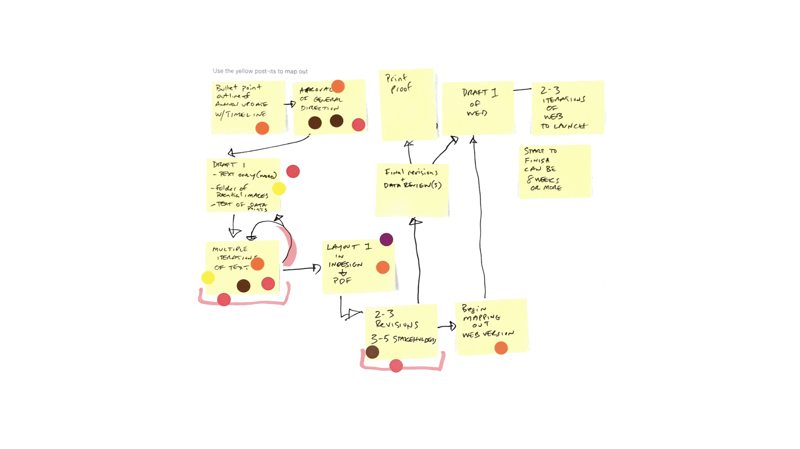
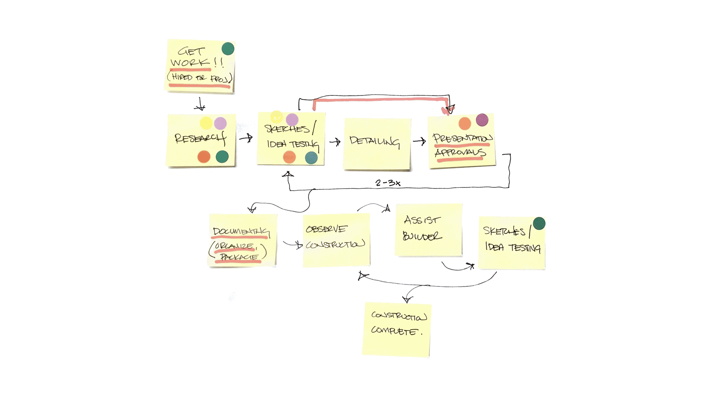
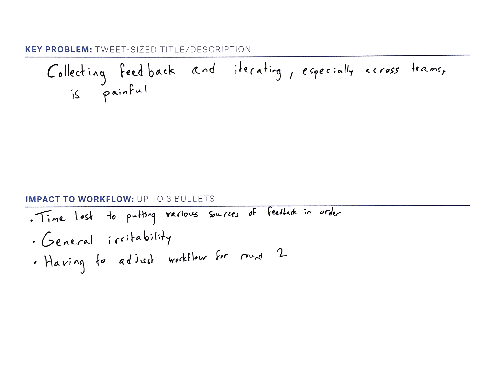
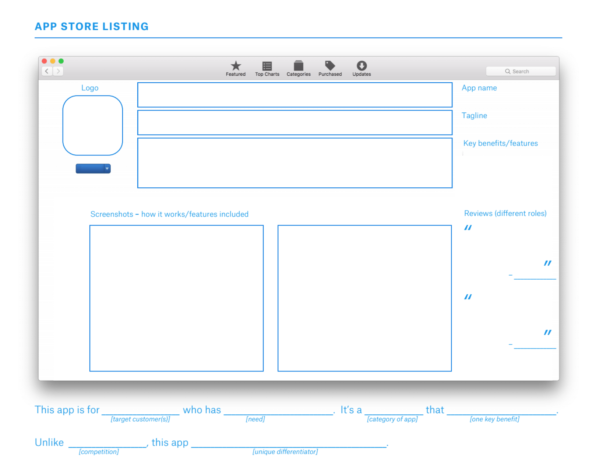
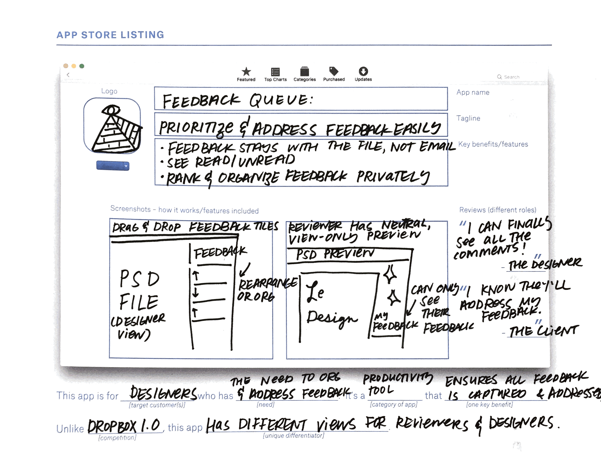
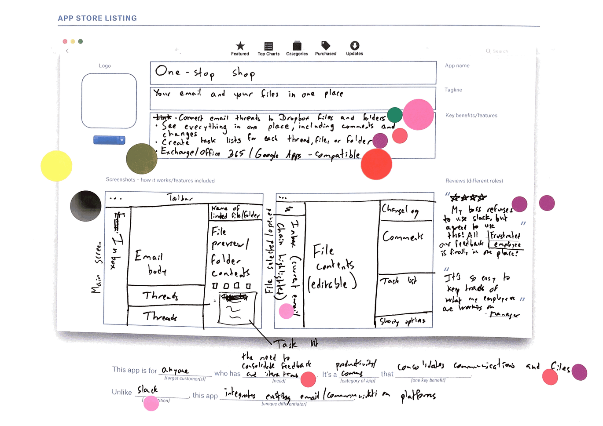

Identifying Opportunities and Concepts for Creative Workers
In early 2017, I designed and led 6 workshops with customers in creative fields. My team was in the front-end phases of design. We hadn’t yet determined what we should build, or in what order. We needed to identify problems, and understand which opportunities would be the highest impact to solve for our creative customers.

Goals
- Identify the most taxing parts of people’s workflows
- Create concepts designed for the needs we identified
- Prioritize which concepts were most promising, balancing customer needs and Dropbox priorities
- [Internally] Anchor a recently assembled team on real user problems firsthand, and stoke enthusiasm for solving the issues we uncovered
- [Personally] Pilot participatory design-inspired methods in a workshop format
Approach
Co-creative research is a great candidate for generative, strategic research – anytime we’re determining what to build, and in what order. So, I designed workshops for 3 groups that ran in 2-part sessions. I could use participatory design-inspired methodology in 1-1 interviews or with groups. I chose workshops because they’re inclusive for customers and teammates. The whole team could attend and talk to customers firsthand; and customers share the room with their peers in the field.
Part I: Identify Problems & Prioritize Opportunities
I designed the first set of workshops to enable people to tell stories about what wasn’t working in their workflows. I needed the team to see where in people’s work the most challenging parts were; and understand the impact it had on their overall process.
Socialize Internal Participation
I was embedded on the team so I had enough context to have informal conversations with the team about their needs and expectations. I socialized and evangelized the workshops so I could encourage cross-functional participation. This included 1-1 and 1-many meetings discussing the methods and goals, and encouraging people to join in.Design, Prep, and Test Materials
One of the most challenging parts of co-creative design is creating the materials that enable people outside the design team to participate. I designed instructional and participatory assets. For the primary activity, I adapted a day-in-the-life excecise to have participants map a project. Here’s an example that resulted from an internal pilot:

Recruit Participants
Recruiting for co-creative research is a bit different. Rather than look for the average customer in our market, I recruited vocal and opinionated people. I designed a screener and email that emphasized what people would get out of the workshop: Exposure to design thinking methods, a way to tell us directly what they needed to work the way they wanted, and a chance to network with people in their field also looking for best practices.Run Workshops
I ran three workshops for this first phase. Each workshop had 8 participants and several Dropbox folks to help facilitate conversations. People mapped their workflows individually, and highlighted the most irksome parts in red. Then, they identified a partner based on common pain points (red areas). A Dropbox teammate then sat in and moderated their discussion, where they discussed the aspects that were making that area painful. Then, together they summarized the root problem in a tweet-sized statement:

Debrief & Synthesize With Dropboxers
At the close of the workshop, all Dropbox attendees quickly debriefed what they saw in their groups. We went over themes together to use in the second series of workshops. At the end of three workshops, we could clearly point to the top problems for creative workers, and describe the impact it was having on their work.
Part II: Generate Solutions
In the next series of workshops, we invited the same 24 people back a week later. I wanted to build on the problems they identified, and enable them to generate solutions with us. If we could understand what their success criteria were for themselves, it would help the team prioritize and design solutions to test with a broader set of users.
- Design, Prep, and Test Materials
In this round, I needed a way for non-designers to design. I adapted a design-the-box technique to an app listing. App listings are familiar to people across platforms. They also include sections like key value propositions and features. If I could get people to generate their take on what key value propositions and “features” would help them, I could help the team generate solutions around those goals and outcomes.  - Run Workshops
I started the workshops by summarizing the key themes we observed in the last round, and asking people to help make sure that they were accurate – is this what they meant when they said feedback was hard? Then, I hung up posterboard around the room with each theme. Dropbox teammates and customers went around and silently brainstormed, as well as took in ideas from others. We seeded the brainstorm with fictive and planned features. We wanted to see if people picked our ideas or not.
Then, we asked them to take notes of the ideas they liked the best, and to pick the problem that impacted them the most to solve. Then they individually filled out the app store listing workshops. - Discussion & Voting
I taped up the app listings. Participants used sticky dots to annotate ideas they liked, so we could heat map popular ideas. We then time-boxed discussions for each idea to talk about what people liked, or where they could see it not working out. Finally, folks got a big dot to vote on the idea that would help their work along the most.
 - Debrief & Synthesize With Dropboxers
At the end of the workshops, we talked about which ideas moved forward. We also talked about which of our ideas didn’t move forward, and instead were replaced with better ideas from the participants. For example, many participants imagined being able to traverse the history of their documents and feedback conversations, so they could see how and why the work evolved. This was not something we had considered.
Findings & Outcomes
Across the workshops, one of the most prominent problems people identified was working with feedback. I can’t go deep on the specific findings, but the outcomes generated a workstream that my team carried through the summer. Following the workshops, we spent a few months iteratively researching and prototyping concepts that matched the goals and needs we observed in the workshop. Ultimately, this work helped us form a team dedicated to feedback needs. This team is piloting features soon year to measure for adoption and fit.
I think research is successful when outcomes are reflected in designs. One of the most pleasant surprises for me was how calibrated and excited the whole team was based on what they saw. Many teammates participated, and were more knowledgeable and enthusiastic than I’d seen in prior research sessions. Months later, participants’ workflows and pain points were used as generative inspiration and rationale for work across teams.
Retrospective
In hindsight, these are the top things I’d do differently:
- Do a better job priming participants. Participants gave feedback that they wished they had even more time to think about a prompt or have “homework” before coming in so they could rely less on recall.
- Pilot the workshops and materials with people that aren’t familiar with design methodology. I piloted methods with designers on other teams. However, when I ran the first two workshops, it was clear that I needed a more accessible way to help people enter our design process that didn’t know design. I pivoted quickly; but it would have been lovely not to have to pivot at all on users’ time!
- Provide more support to Dropbox teammates before workshops. We met many times before the workshops, but I didn’t spend as much time as I should have helping people learn how to facilitate conversations. Luckily I designed worksheets and materials to guide conversations, so this is less about bias than it is about comfort between participants and Dropbox hosts.